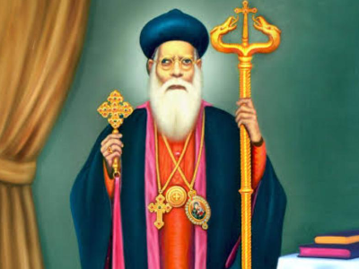

About Us

SDOF
St. Dionysius Orthodox Fellowship (SDOF) was canonically established through Kalpana No:65 dated 1st April 2025 , by the blessings & directive of H.H Baselious Marthoma Mathews III, the malankara Metrapolitan of Malankara Orthodox Syrian Church. SDOF , a vibrant spiritual movement serving under St John’s Orthodox Syrian Church are committed to strengthening faith, encouraging bold testimony, and nurturing a culture of preaching and spiritual leadership within our parish. SDOF exists to inspire members—especially youth—to stand firm in Orthodox values and live as witnesses of Christ in today’s world. Through fellowship gatherings, spiritual sessions, leadership initiatives, and active church support, we strive to build a united community rooted in truth, conviction, and purpose.

Chronology
- 1933 AD , Rev.Fr. K.O. Geevarghese(Kandamath Achan) from our Parish got ordinated as a priest & appointed as the vicar of St.Johns Orthodox Syrian Church. The parish made a lot of progress in spiritual & material matters during his long 55 years of priesthood.
- 29 February 1988, Rev. Fr. K.O. Geevarghese passed away to his eternal reward.
- After Fr. K.O.Geevarghese, Rev.Fr.G.Koshy of Ottaplamootil & Rev. Fr. Shaji Issac of Madappara kizhakkethil (Kunnamkulam Diocese) got ordinated as priests from parish.
- The unexpected death of Rev. Fr. G.Koshy on 22nd September 2024 was a great loss to the parish & to the church(congregation)
"By the grace of God, our parish has been able to celebrate our quasquicentennial anniversary, honouring our past while embracing a new , bold vision."

Church History
The ancient St. John's Orthodox Syrian Church in Punalur town has been a spiritual source for Christians in the Chemmanthoor area for well over a century.
"Built in 1899 AD under the guidance of Late . Kandamath Thomman vareeth.”
The Chemmanthoor Orthodox Syrian Church was established under the order of the Malankara Orthodox Syrian Church. Over the decades, the parish has grown into a beacon of faith, serving generations of believers through its rich liturgical tradition, charitable works, and community programs.

The Church Today
The parish owns a Chapel at Manjamonkala,Punalur where Divine Liturgy conducts on every 2nd & 4th Sunday’s. Our parish conducts Sunday school from Kindergarten to 12th standard & have all units of spiritual movements of the church such as:
- Sunday School
- Balasamajam
- Balikasamajam
- MGOCSM
- AMOSS
- Orthodox Church Youth Movement(OCYM)
- Martha Mariam women’s society
- Suvisesha Sangham
- St.Dionysius Orthodox Fellowship(SDOF)
- St.Joseph’s Orthodox Fellowship(SJOF)
- 13 prayer groups